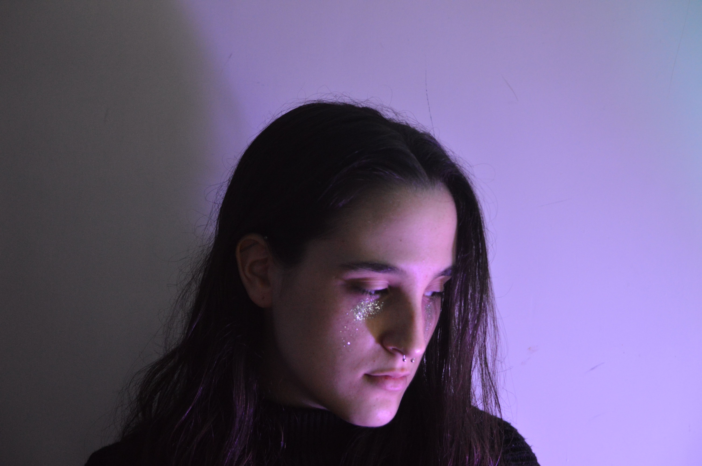

Autorretrato
My idea was to portray how I feel. First I decided not to look at the camera to
express my discomfort or rejection towards this device, as I hate taking pictures of my face.
I wanted to create the idea of something that is being consumed by this darkness.
Project Date
2020
The Challenge
Honestly, it was difficult to set the camera as I couldn't see
the screen. Also, creating that mood with the lights and colors was an interesting process.
Nonetheless, I think the biggest challenge was taking a picture of myself
